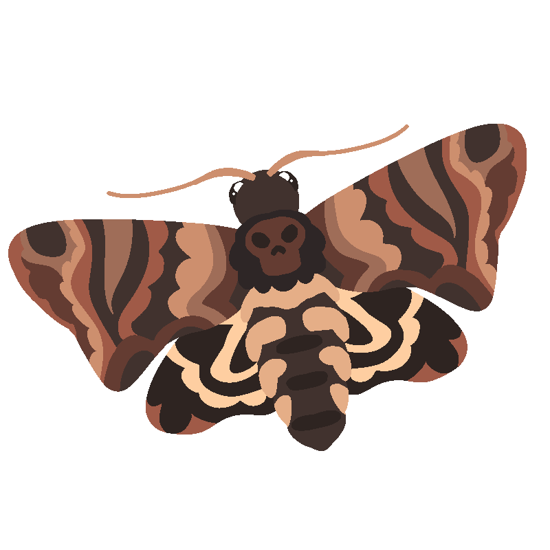

My Projects
Here's a handful of projects I have created and released for the games I love to mod. It's likely to stay as only Slay the Spire for the time being, but in the future I'll probably end up making some mods for Risk of Rain 2 or Deep Rock Galactic!